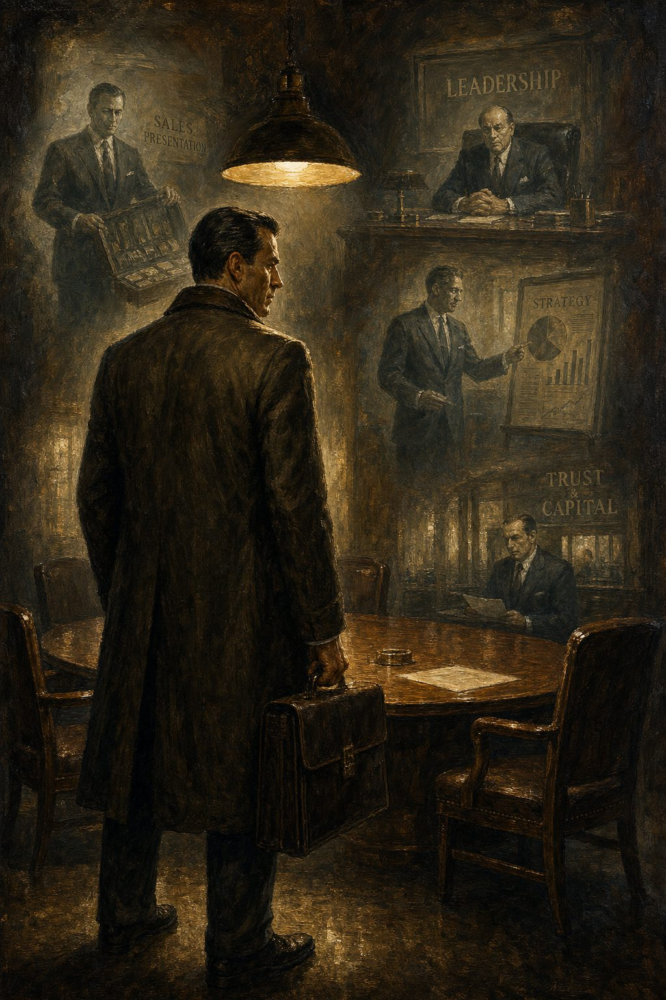

Десять статей — единое размышление
00 · Редакция
Редакционное вступление
Каким хочет быть выпуск 3

01 · Глава
Первочувство
Что такое первый слой и как мы его ощущаем

02 · Теория
Семь измерений
7D-модель человеческого чувства

03 · Теория
Три мозговых слоя
Первочувство, мозг млекопитающего, человеческий мозг

04 · Гипотеза
Связь между первочувствами
Высокочастотная гравитация и лобная кость

05 · Полемика
Что мы делаем с детьми
Систематическое выдавливание

06 · Педагогика
Мама, я хочу есть
Постоянное присутствие и цена отсутствия

07 · Будущее
Образование в эпоху ИИ
Почему всё, чему мы сейчас учим, скоро перестанет иметь значение

08 · Размышление
Ретроспектива
Что хотел сказать выпуск 3 и что будет дальше

09 · Применение
Первочувство в профессиональной практике
Продавец, начальник, консультант и банкир — четыре профессии, один инструмент